Toastmaster-sarah ( what a lovely smile isn’t it?
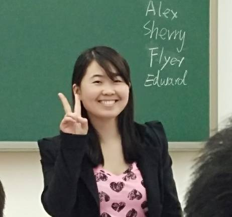
Table topic part~
Keven, always the first one! (can you read me from my facial expression?
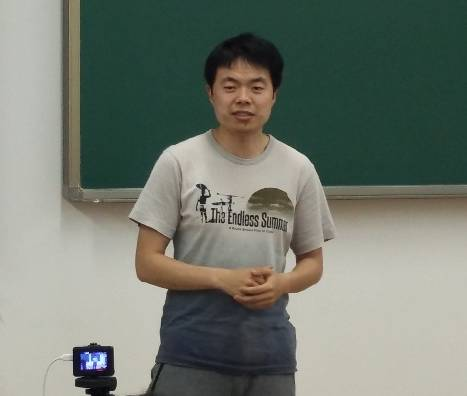
New guest James (speech? I’m professional
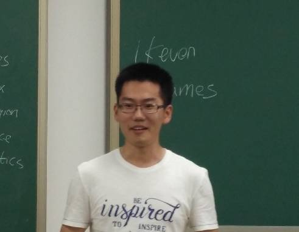
Smart boy-Rocky (move your sight away from our president!
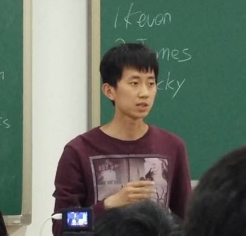
Beautiful and sweet girl-Thea~(maybe the voice should be turned up
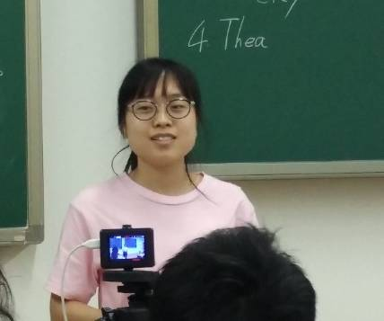
New guest—Pedtro ( your performance makes you feel like a cute girl.
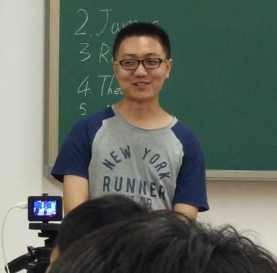
Marcos-our foreign guest brought his first speech (alittle shy but unhurried
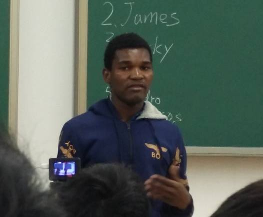
David and Nunu performed an interesting dialogue between a couple (actually they both have the gift to act as a comedian. 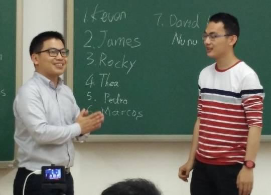
Prepared speech part~
Joy-cc5 (Psychology is a subject which you know but alsodon’t know and
joy gave us an impressive lesson about it)
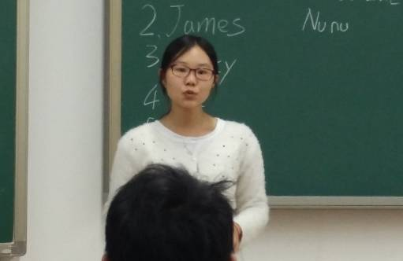
Channing-cc1 (Do you guys have any experience abroad? exclude me, our beautiful Channing shared her first communication experiencewith foreigners in japan which tell us lot about the country and the communication skills
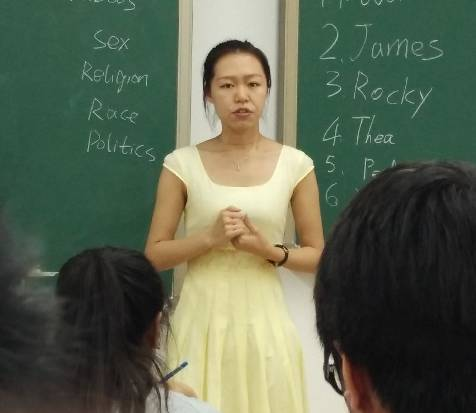
Best prepared speaker-Channing (the performance Channing showed to us didn’t reveal the fact that she come to Beihang TMC less than 2 month, congradulations!
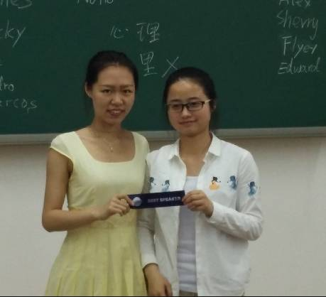
Best table topic speaker-Keven (the reason why Keven give less and less speeches in meeting is that he got the best all the time
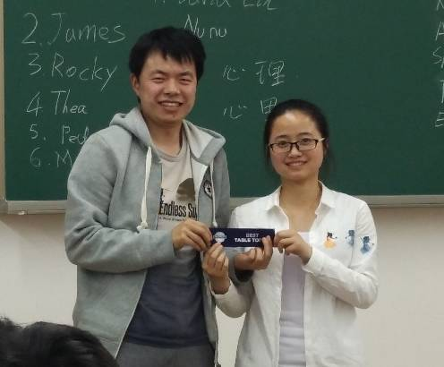
Beat evaluator-sherry(thanks to Sherry’s meticulous evaluation for our meeting, you did really a great job.
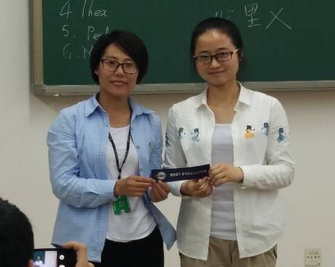
At lastthe big photo together!
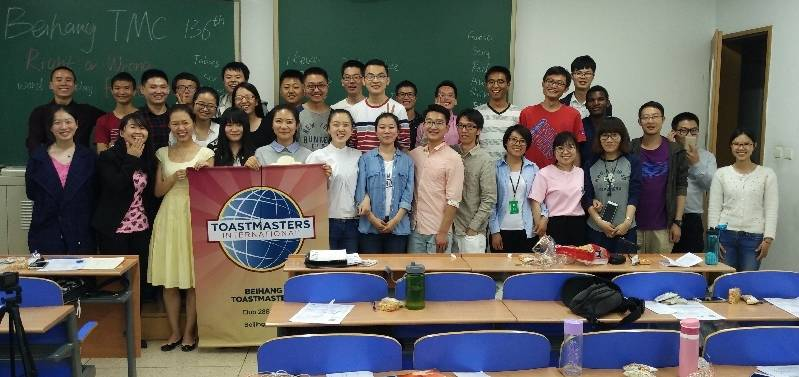
welcome every guest to Beihang toastmaster~